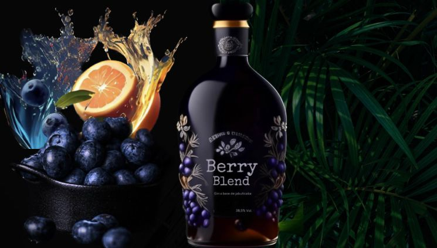

Gin Berry Blend
R$ 90,00
Descrição: Com o aumento da demanda por bebidas artesanais e inovadoras, a empresa BerryBlend Spirits trás um gin a base de jabuticaba com qualidade e sabor distritivo a BerryBlend Spirits Creations prioriza a qualidade e o sabor, além de práticas sustentávels, desde a seleção de Ingredientes até as embalagens proporcionando uma experiência sensorial única e contribuindo para o desenvolvimento sustentável da Indústria de bebidas.